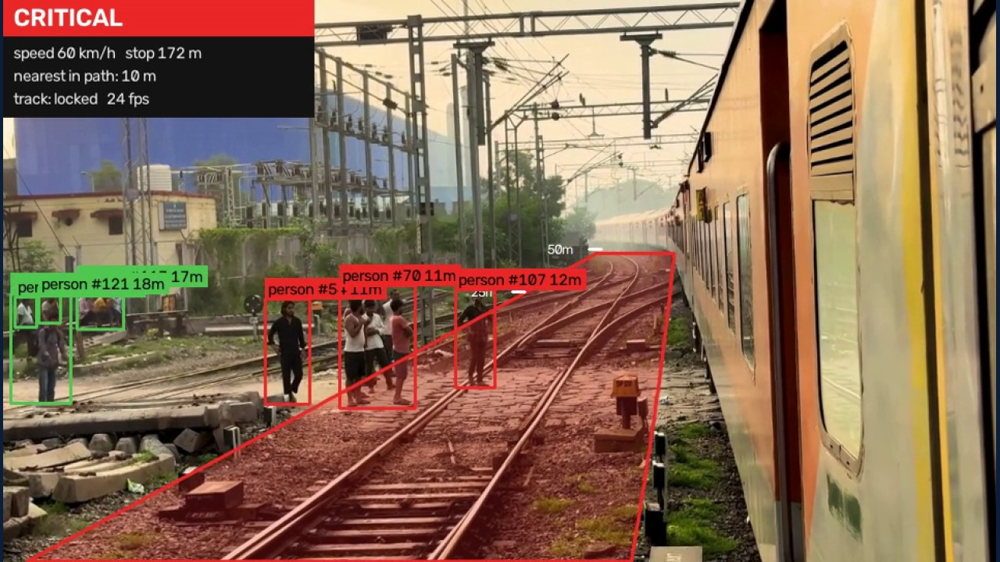
Most railway deaths in India are not the train accidents that make headlines: they are people and animals on the track. A train cannot steer, and needs hundreds of metres to stop. RailSight is an academic prototype that watches the line ahead from a single forward camera and, for every hazard, decides whether it is in the train's path and whether there is still distance to stop.
Equally important were the things that did not work, and the measurements that showed it: a motion-based mask for the train's own dashboard, a rail-pair gauge measurement, a training time budget that silently broke the learning-rate schedule. They are covered in section 7.
India's Ministry of Railways recorded 40 consequential train accidents in 2023-24, down from 473 in 2000-01 [1]. The National Crime Records Bureau counted 21,803 railway deaths in 2023, 73% of them from falls or people struck on the track [2]; add 27,489 cattle run-over incidents in 2022 [3] and 79 elephants killed in five years [4]. Worldwide, trespassers and level-crossing users account for 96% of rail fatalities in UIC data [5].
A passenger train at 100 km/h needs roughly 440 m to stop in our model; engineers quote 700 m to 1 km for express trains [6]. Night, fog, curves and long monotonous shifts make spotting a hazard that far ahead harder still. A system that never tires helps even when a stop is impossible: braking a few seconds earlier cuts impact energy (it grows with the square of speed) and an earlier horn gives people and animals time to clear the line.
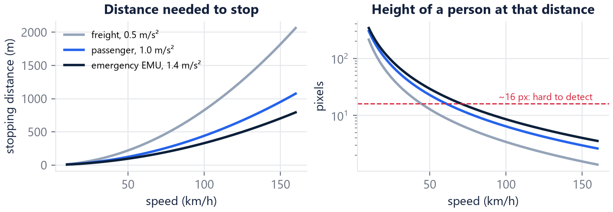
| System | What it does | What it does not do |
|---|---|---|
| Kavach (Indian ATP) | Prevents signals passed at danger, overspeed, train-to-train collisions; v4.0 on ~738 route-km [7] | Does not detect people, cattle, elephants or debris |
| Intrusion detection | Fibre-optic sensing that alerts on elephants in mapped corridors [8] | Fixed corridors, elephants only |
| EU SMART (Shift2Rail) | Prototype fusing thermal, night-vision, stereo and laser [9] | Not deployed |
| OSDaR23 (DB / DZSF) | Open multi-sensor dataset for automatic train operation [10] | Shows it is still open research |
The ego track is the connected track region that starts nearest the bottom centre of the view. It is traced row by row upwards (at switches, following the branch closest to the previous row), and two robust fits summarise it: the centre line (quadratic, for curves) and the track width (linear in the image row, because on flat ground the projected gauge shrinks linearly to zero at the horizon). The danger corridor is the ego track widened to the train's envelope (3.2 m + 0.5 m each side). An object is in the path if it is inside the corridor now, or its lateral motion carries it inside within ±2 s of the train's arrival.
The width fit gives a pixels-per-metre scale for every row. With the gauge G (1.435 m standard,
1.676 m Indian broad gauge) and focal length f, an object touching the ground at row y is
Z = f · G / width(y) away — no depth sensor, no stereo. Its distance is compared with the stopping
distance v·t + v² / 2a plus a 50 m margin: in path and within stopping distance is CRITICAL, in path
beyond it or close to the corridor is WARNING. A hysteresis state machine (3 frames to raise, 15 to lower) stops the
alert from flickering.
A detector only finds classes it was trained on. The segmentation model, however, knows what a normal track bed looks like (rails, sleepers, ballast, grass), so any non-track pixels on the track itself are flagged as an unknown object, sized physically through the gauge scale (≥ 0.3 m wide) and confirmed over three segmentation updates. When the model is unsure of the track itself (darkness, glare, blur) the check switches off and the display says so, rather than inventing hazards.
| Dataset | Content | Used for | Licence |
|---|---|---|---|
| RailSem19 (AIT) | 8,500 cab-view frames, dense 19-class masks, from 38 countries | Segmentation; mined detection boxes | Registration per person; no redistribution |
| railway (Roboflow) | 3.2k images, 11 classes | Detection | MIT |
| Railway track obstacle detection (Roboflow) | 620 images, 6 classes | Detection | CC BY 4.0 |
| Pexels cab-ride clips | 7 short videos, incl. Indian Railways | Real-video demos | Pexels licence |
| OSDaR23 (DB / DZSF) | Multi-sensor with lidar | Planned: ranging ground truth | Server unavailable (503) |
Before training, every source was inspected visually and statistically. Two problems would have silently corrupted the results:
RailSem19's masks label every human, car, truck and rail-vehicle pixel in 8,500 real cab-view frames. Their connected
components become boxes — about 16,400 training boxes (4,237 person, 8,828 vehicle, 3,289 of a new
rail_vehicle class: another train on or beside the line). Visual checks showed the masks' noise: "vehicles"
on billboards and camera watermarks, "rail vehicles" on catenary gantries. Filters were added for each: minimum size,
minimum fill ratio (thin lattices fail it), no small boxes on the image border, and rail vehicles must stand on track.
The segmentation split was kept, so RailSem19 test frames stay unseen by every model.
| Model | Task | Data | Where | Training |
|---|---|---|---|---|
| SegFormer-B2 | Segmentation (default) | RailSem19 | Laptop | 60k iterations, batch 4, 640 px crops, AdamW, bf16 (~4.5 h) |
| DeepLabV3-ResNet50 | Segmentation baseline (CNN) | RailSem19 | Laptop | same schedule (~6 h) |
| SegFormer-B0 | Segmentation, small/fast | RailSem19 | Laptop | same schedule (~2.5 h) |
| YOLO11s v1 | Detection | Roboflow (cleaned) | Laptop | 100-epoch budget, early-stopped at 70 |
| YOLO11m v1 | Detection | Roboflow (cleaned) | Kaggle 2×T4 | 100-epoch budget, ~2 h |
| RT-DETR-l v1 | Detection (transformer) | Roboflow (cleaned) | Kaggle 2×T4 | early-stopped at 46, ~2.2 h |
| YOLO11m v2 | Detection | Roboflow + RailSem19 boxes | Laptop | 76 epochs, 640 px (~6 h) |
| YOLO11m v2 @ 960 | Detection (default) | Roboflow + RailSem19 boxes | Laptop | fine-tuned from v2 at 960 px, lr 0.002, 30 epochs |
All models start from public pretrained weights (SegFormer on Cityscapes, DeepLabV3 and the detectors on COCO). Segmentation splits RailSem19 80/10/10 with a fixed seed (6,800 / 850 / 850 frames, resized to 1280×720 once so that JPEG decoding does not bottleneck training).
Laptop: RTX 5060 Laptop GPU (8 GB, Blackwell), PyTorch 2.11 with CUDA 12.8 (required for RTX 50-series), run unattended overnight with a self-healing queue: each step resumes from its checkpoint and is retried, so a crash, an out-of-memory error or a PC restart cost minutes, not runs.
Kaggle: free 2× Tesla T4 GPUs (30 GPU-hours a week) trained the two larger v1 detectors in parallel with the laptop. Only the Roboflow-derived data (MIT / CC BY) was uploaded; a marker file kept the laptop queue from training the same models twice.
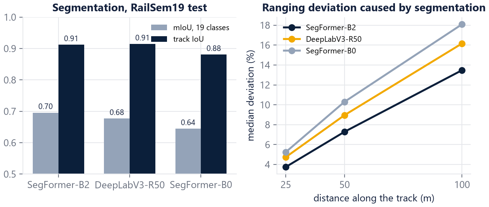
| RailSem19 test | SegFormer-B2 | DeepLabV3-R50 | SegFormer-B0 |
|---|---|---|---|
| mIoU (19 classes) / track IoU | 0.696 / 0.912 | 0.677 / 0.914 | 0.645 / 0.881 |
| Corridor found / IoU vs ground-truth corridor | 99.9% / 0.84 | 99.8% / 0.82 | 99.6% / 0.81 |
| Ranging deviation at 25 / 50 / 100 m | 3.8 / 7.3 / 13.5% | 4.7 / 9.0 / 16.2% | 5.2 / 10.3 / 18.1% |
| Speed (segmentation alone) | 25 FPS | 30 FPS | 59 FPS |
OSDaR23's lidar was the planned ground truth, but its server stayed down. Instead, every person in RailSem19 gives a
second, independent distance from body height (f · 1.7 m / height_px). The focal length cancels in the ratio
of the two estimates, so the check needs no calibration.
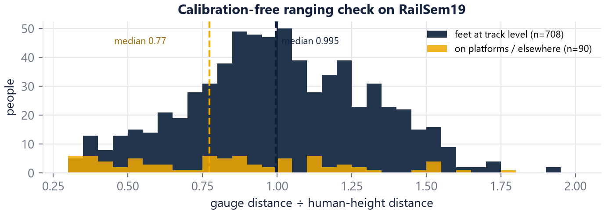
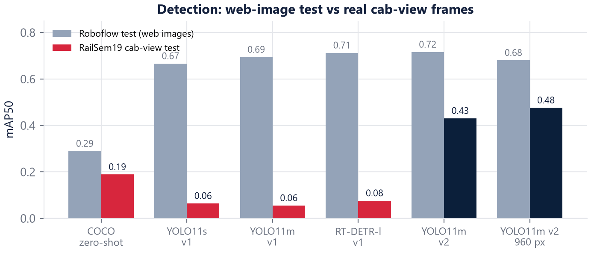
| Detector | Roboflow mAP50 | Cab-view mAP50 | AP person / vehicle / rail vehicle | GPU FPS |
|---|---|---|---|---|
| YOLO11s, COCO only | 0.290 | 0.189 | 0.22 / 0.18 / 0.17 | – |
| YOLO11s v1 | 0.666 | 0.064 | 0.10 / 0.09 / – | 102 |
| YOLO11m v1 | 0.694 | 0.055 | 0.08 / 0.09 / – | 70 |
| RT-DETR-l v1 | 0.712 | 0.076 | 0.12 / 0.11 / – | 36 |
| YOLO11m v2 | 0.716 | 0.431 | 0.52 / 0.49 / 0.28 | 73 |
| YOLO11m v2 @ 960 px (default) | 0.681* | 0.476 | 0.58 / 0.54 / 0.31 | 77 |
* Roboflow images are 640 px natively, so 960 px inference only upscales them. GPU FPS: detector alone, fp16, at its own input size.
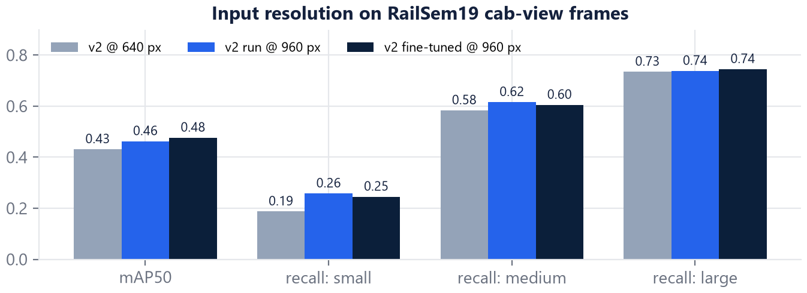
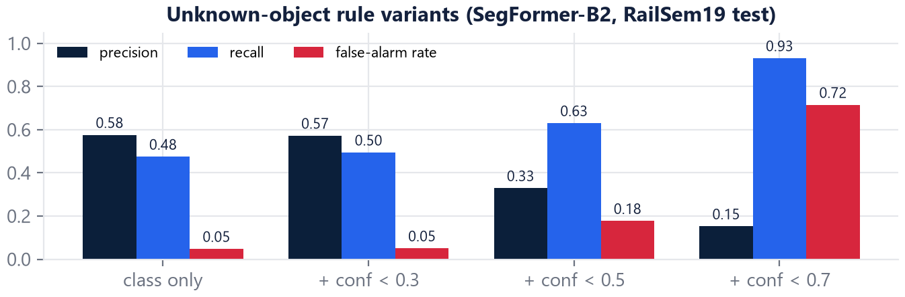
| Full pipeline (RTX 5060 Laptop) | FPS |
|---|---|
| Segmentation every frame | 15.0 |
| Segmentation every 3rd frame (default) | 28.0 |
Profiling showed the segmentation network was the bottleneck. Fused attention (SDPA), bf16, GPU-side normalisation and an fp16 detector gave +41% on SegFormer-B2 in back-to-back runs with >99.9% identical predictions. Absolute laptop FPS varies with power and thermal state (17.7–28 FPS across sessions).
Seven free cab-ride clips — open country, a level crossing, fog, a station and tunnel, two in-cab cameras and an Indian Railways line with people crossing — were run through the full pipeline. Rendering them revealed failure modes no test set contains.
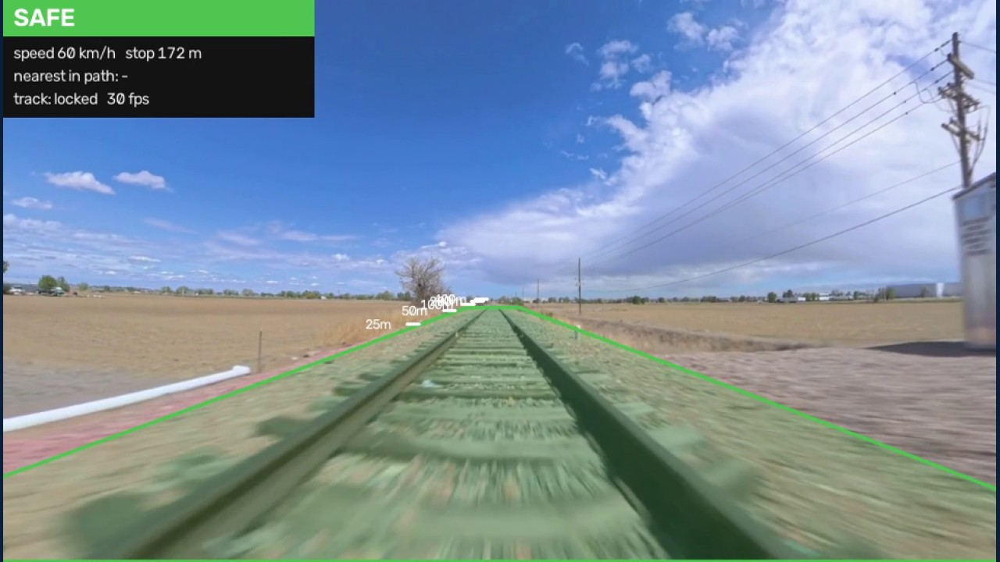
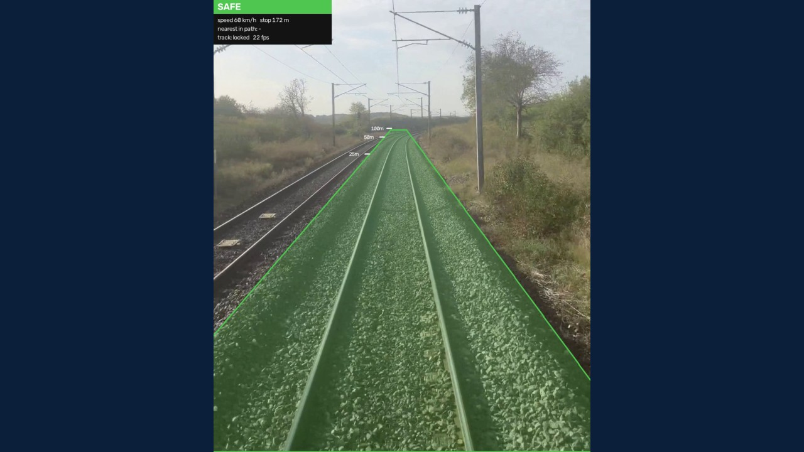
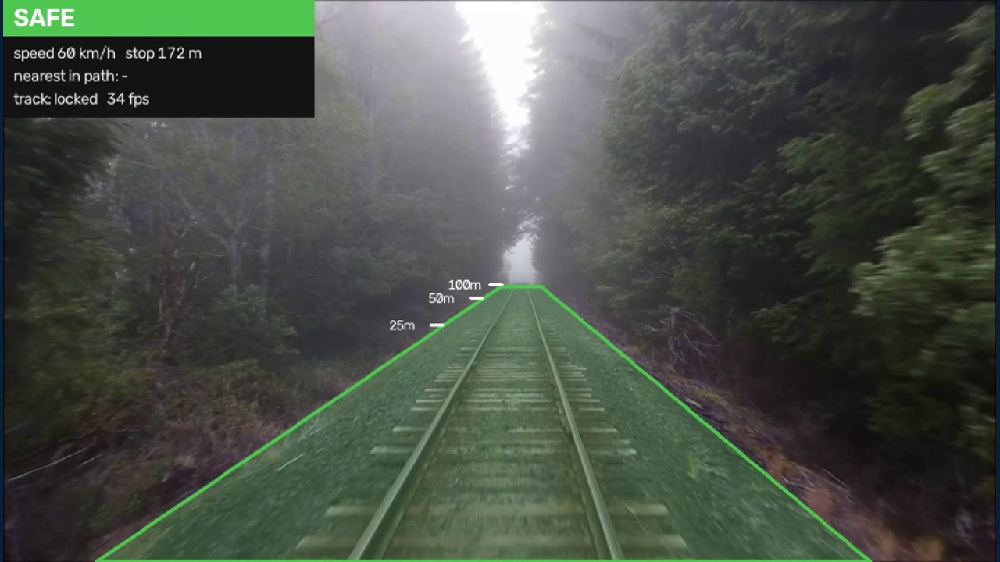
The first render with the final models raised CRITICAL far too often on some clips. Each cause got its own fix: the corridor now ends where the real view of the track ends, the train's own parts can be masked once per camera mounting (dashboards, hoods, the side of a coach), the unknown-object check switches off when the model is unsure of the track, and an unknown object must persist for three segmentation updates before it counts.
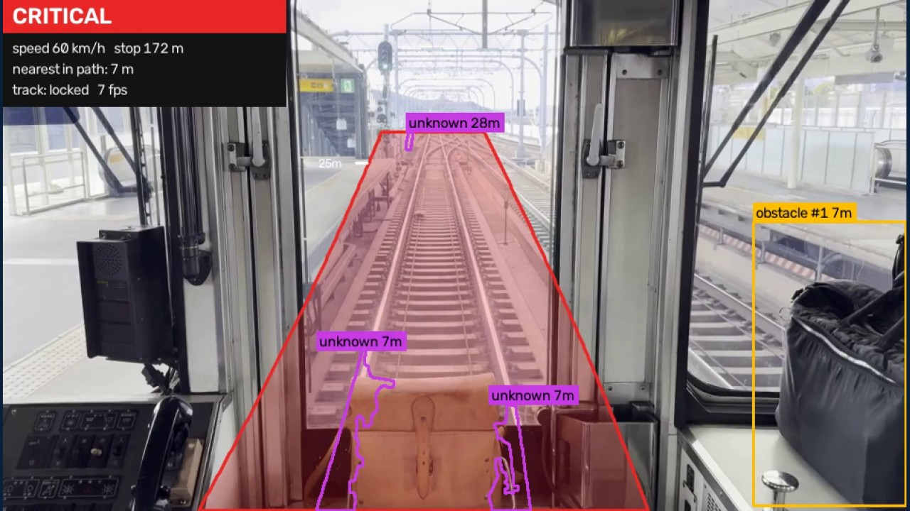
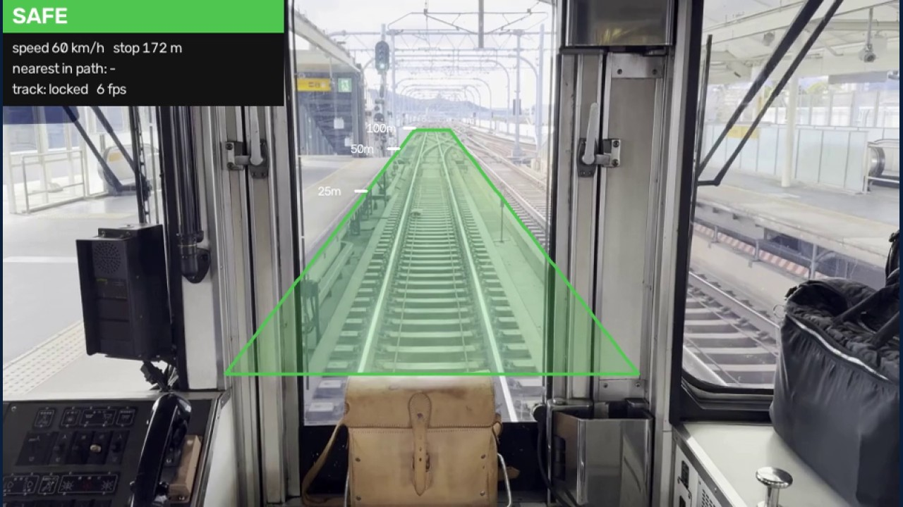
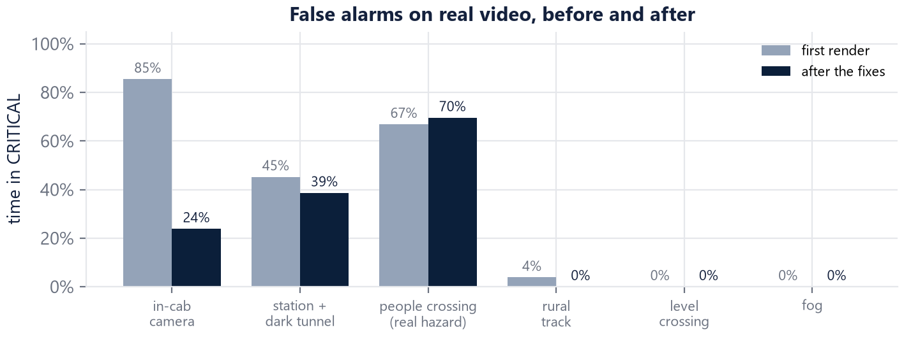
The final numbers hide most of the work. These are the problems that changed the project, what we did, and what each taught us.
ProblemSegFormer-B2 at batch 8 needed 13.5 GB on an 8 GB card. Windows did not raise an error; it spilled into system RAM and training ran ~130× slower (an estimated 250 h). Full-resolution evaluation did the same (1 h 40 min per evaluation).
FixBenchmarked settings (batch 4 fits at 6.9 GB), evaluated one image at a time, added a guard that aborts with a clear message when an iteration is suspiciously slow.
ProblemAn evaluation "on the CPU" still opened a GPU context and crashed training; later the PC restarted mid-run, and a background app caused two out-of-memory errors.
FixCheckpoints with full optimiser state, resume flags and a queue that retries each step. Each incident afterwards cost minutes, not runs. Evaluations during training now hide the GPU entirely.
ProblemAudit before training: 74% of one set's boxes were weeds, and near-identical images sat in train and test.
FixDropped non-hazard classes, grouped duplicates by perceptual hash, re-split by group.
ProblemOn Kaggle, Ultralytics' time= budget re-planned the epoch count to fill
10.5 h, so the learning rate never decayed. YOLO11m then scored below YOLO11s — but retraining correctly showed that
was not the cause: the two models simply swap places between validation and test, within the noise of 270-image sets.
LessonCheck training curves, not only final scores; do not over-read small differences.
ProblemAll three v1 detectors scored under 0.08 mAP50 on real cab-view frames — below an un-tuned COCO model — despite 0.67–0.71 on their own test split.
FixMined ~16k in-domain boxes from RailSem19's masks, filtered visually checked noise, added a rail-vehicle class: 0.43, then 0.48 at 960 px.
ProblemThe model labelled a cab's dashboard as track; darkness produced phantom objects; single frames flickered.
FixCorridor limited to rows where track is visible, per-camera ignore regions, a low-confidence guard, three-update persistence for unknown objects. In-cab clip: 85% → 24% of time in CRITICAL.
dropped Motion-based vehicle mask — pixels that stay still while moving should be the train itself, but rails straight ahead are just as still, so it removed the track.
optional Rail-pair gauge — measuring between the two rails fixed merged tracks at switches but picked wrong pairs elsewhere; it stays off by default.
dropped Low-confidence pixels as "unknown" — quadrupled false alarms on class boundaries for little recall.
ProblemOSDaR23's download server returned errors for days.
FixA calibration-free check with human height as the second ruler (section 5).
| Category | Used |
|---|---|
| Datasets | RailSem19 (AIT Austrian Institute of Technology) · two Roboflow Universe railway-obstacle datasets · Pexels cab-ride videos · OSDaR23 (attempted) |
| Pretrained models | SegFormer B0/B2 on Cityscapes (NVIDIA, Hugging Face) · DeepLabV3-ResNet50 (torchvision, COCO) · YOLO11 and RT-DETR on COCO (Ultralytics) · ByteTrack |
| Libraries | PyTorch 2.11 (CUDA 12.8) · Hugging Face Transformers · Ultralytics · OpenCV · NumPy · pandas · Matplotlib · Gradio · imageio-ffmpeg · PyYAML · pytest · Ruff · uv |
| Compute | Personal laptop with an NVIDIA RTX 5060 Laptop GPU (8 GB) for all RailSem19 work and overnight runs · Kaggle free GPUs (2× Tesla T4) for two detectors |
| Engineering | Git and GitHub · GitHub Actions continuous integration (lint and unit tests on every push) · Microsoft Edge for rendering this report |
| Sources for context | NCRB · Ministry of Railways replies in Parliament · Ministry of Environment · UIC · UK Office of Rail and Road · EU Shift2Rail / CORDIS · DZSF / Deutsche Bahn (OSDaR23) |
| AI assistance | Claude Code (Anthropic) was used as a coding and research assistant: writing and debugging code, running and monitoring experiments, and drafting documentation. Problem framing, design choices, data and licensing decisions, and the review of every result were the team's. |
We thank our guide, Dr. Jayita Saha, the School of Computer Engineering at Manipal Academy of Higher Education, the RailSem19 authors for granting dataset access, the Roboflow Universe contributors, and the Pexels videographers whose free footage made the real-video evaluation possible.
Code, results and reproduction steps: github.com/Krishu-24/RailSight. Trained weights are shared privately (RailSem19 licence). RailSight is an academic prototype for perception and decision support, not a certified signalling or braking system.